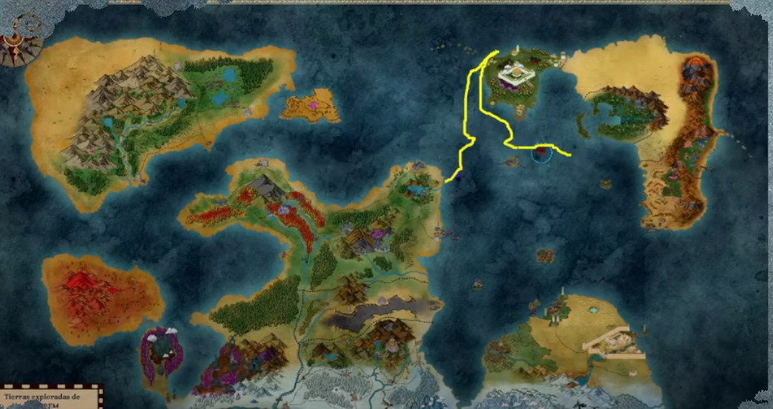

Esto es Anurem, un basto mundo formado por cuatro grandes espacios de tierra y algunos mas pequeños, repleto de islas y conectados por una enorme masa de agua que permite recorrerlo en su totalidad a bordo de barcos o incluso una ballena amiga
Reino gobernado por Tiefling, poderoso gracias a su poderío mágico y militar, las decisiones sociales de sus gobernantes lo han convertido en una maquina expansiva y de guerra
La familia Rudderles lleva decadas a cargo de crear un bello e importante hogar para sus hijos y su gente. Grandes guerreros han salido de su casa para que Bacristan cresca
Manarhum es lo que todo dwarf estaría orgulloso de llamar casa, el desarrollo y la tecnología son su guía, el orden y el esfuerzo su camino. Tierras dignas para que se puedan vivir bajo los ideales de esta gran Nación
La península cercana al monasterio es donde los Owling se alejaron para vivir en paz y desarrollar su arte, cultivando su cuerpo y sus mentes. Podrán decir que viven atrasados por culpa de sus costumbre y normas, pero en esta vida ellos encontraron su sendero
Puerto en disputa entre Manarhum y Zyramoor, donde está la ciudad puerto de Einsmor, dentro del continente la capital es el Palacio de las Luces
Orreri: la isla de los Alquimistas
Erilia: la isla de la escuela magica
Crisol:Una ciudad puerto
Puerto Coyote: Isla conformada por una gran cantidad de barcos y navíos conectados entre si
Einsmor: Una gran ciudad puerto cercana a Zyramoor